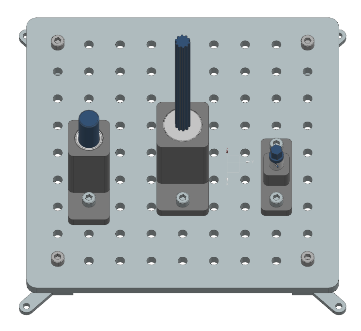

Peg in Hole Tasks
While there are many different peg-in-hole benchmarks, these typically focus on varying the peg and hole geometries, but often feature large tolerances (in many cases such as the NIST taskboard, to be able to allow for the comparison of a wider range of robots since many have difficulty with tight tolerances). In contrast, the tasks in this section focus on tight tolerances and precise insertion of the pegs into the holes.
The final state of all three tasks is shown in the taskboard image below, where the robot has successfully inserted the pegs into their respective holes.
{kind=link}
Task 1: Round Peg
Description:
A round peg is positioned upright on a flat surface adjacent to the Taskboard. The task requires the peg to be inserted into a designated round hole in a target component.
Test Objective:
This task evaluates the robot’s ability to handle cylindrical objects, perform precise alignment, and execute controlled insertion motions typical in industrial assembly processes.
Success Criteria:
The round peg is fully inserted into the designated hole.
No displacement of the peg occurs after the robot releases it.
Task 2: Splined Shaft Peg
Description:
A splined shaft peg is positioned upright on a flat surface next to the Taskboard. The task requires the peg to be inserted into a matching splined hole in a target component.
Test Objective:
This task assesses the robot’s capability to recognize and align keyed or splined features, ensuring correct orientation and fit during insertion.
Success Criteria:
The splined shaft peg is fully inserted into the matching splined hole.
No displacement of the peg occurs after the robot releases it.
Task 3: BNC-Connector
Description:
A male BNC connector is positioned on a flat surface next to the Taskboard. The task requires the connector to be inserted and locked into a corresponding female socket on the Taskboard.
Test Objective:
This task tests the robot’s ability to perform insert-and-twist operations, requiring both translational and rotational alignment, as well as engagement of locking mechanisms.
Success Criteria:
The BNC connector is inserted such that both lugs of the plug reach the end of the guide slots in the socket.
The connector is rotated to the locked position, as verified by a mechanical stop or electrical continuity check.